Introduction
The dataset under consideration is a transaction record table from a supermarket chain purchase database. Through this analysis we will be bringing out sales pattern based on factors such as days, customer behaviour, product types etc. We will start by analysing the sales happened date-wise and proceed with more complex analysis such as basket-level analysis, Associative rule mining and analyse customer shopping behavior.
The notebook containing the analysis can be found here.
The top five rows of the table is shown below.
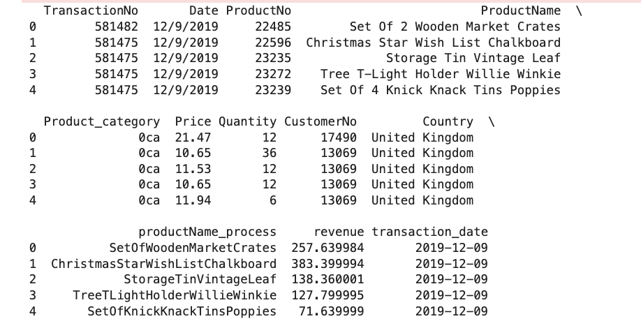Analysis
Sales across the year
Firstly, we will make a line plot showing the total amount collected on every day across the year to find any potential patterns.
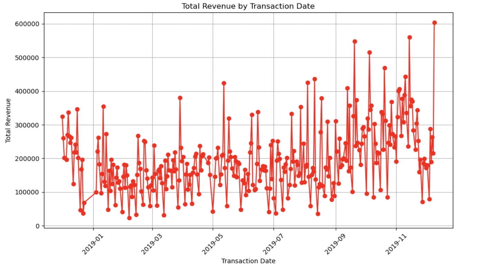From the plot, we can observe that the overall sales is at peak during the last quarter of the year. Also, during most of the months, the sale is at peak during first few days.
Day-wise average sales across the year
In the next plot, we are going to find on which day the sales is going to be high considering the average sales of a day across the year.
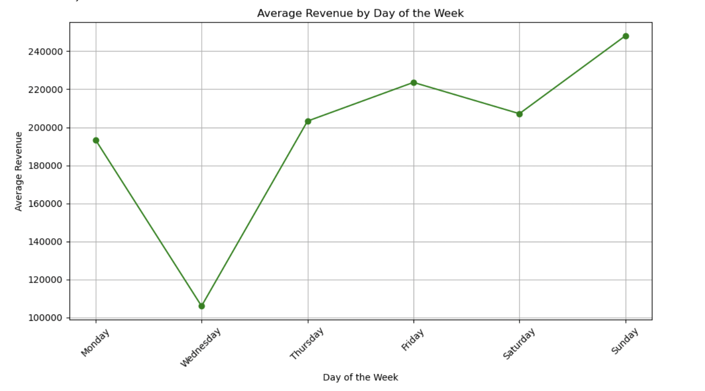
Most items sold on Sundays
Next step is to find which items are sold most on Sundays so that the store can be prepared with some propmotions for these items.
Top 5 products based on profit
The next plot shows the most profitable products for the supemarket.
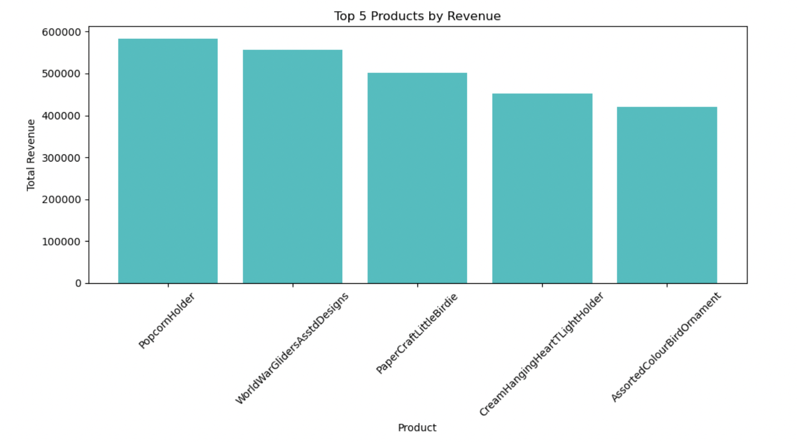Most profitable country
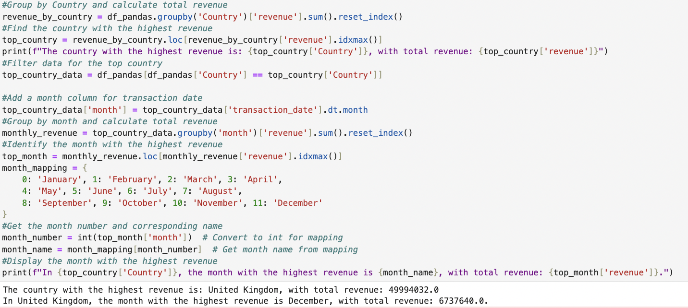Customer with most number of transactions
The customer with the highest shopping frequency is: 12748 with 207 distinct transactions.
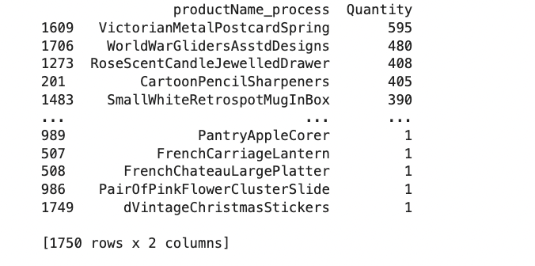Basket recreation
2 new columns were created, Product Category and productname_process to view the desired output. The dataset was grouped based on transaction and all the product category and product_name data were aggregated. The baskets representing each and every transaction is prepared for further analysis.
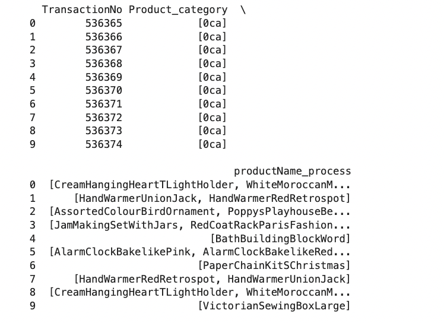Associative Data Mining
For this part, the table is pivotted with top 100 products as columns and transactions as rows. We will be analysing the purchase trennds followed by customers. Apriori algorithm is used for this purpose.
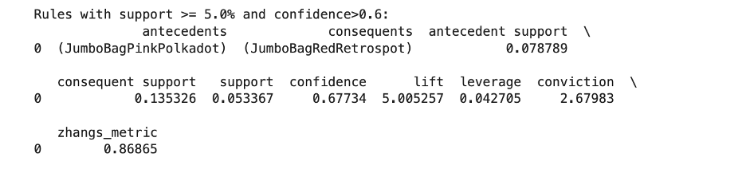From the above query and output, we can conclude that the products JumboBagPinkPolkadot and JumboBagRedRetrospot are frequently brought together in more than 5% of the total transactions
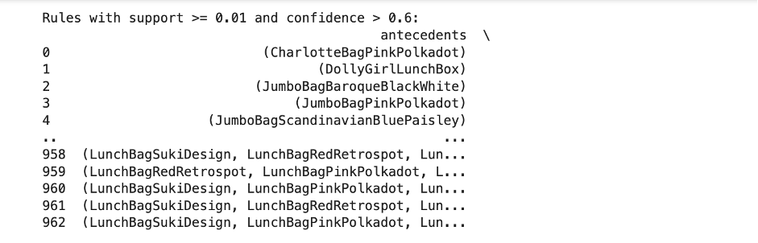 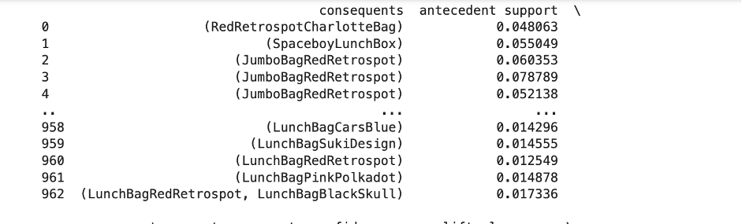 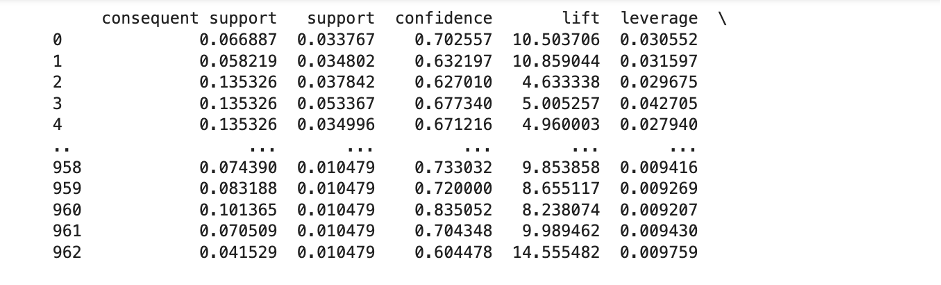 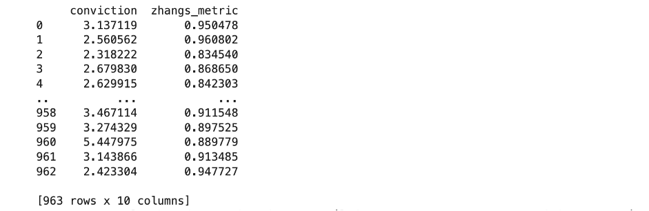From the above results, we can find that there are 962 transactions with a confidence level more than 60%. Hence the antecedent and the consequent can be placed together to boost up the sales.
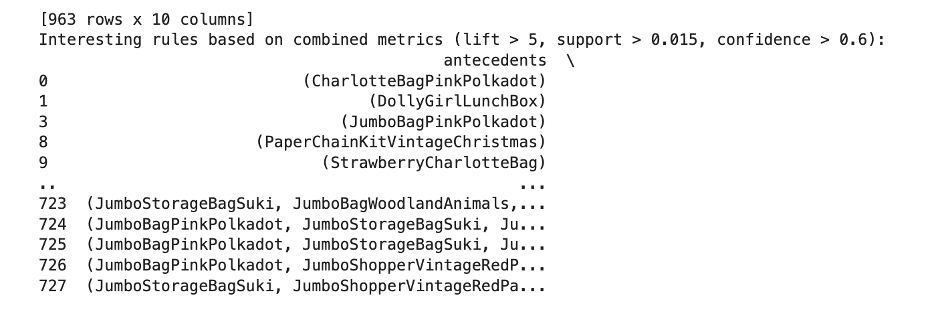 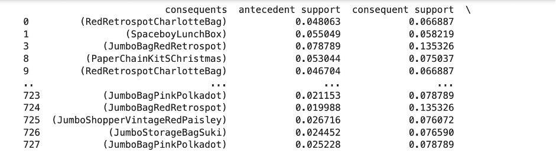 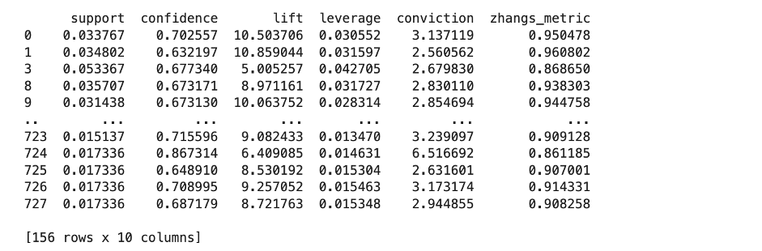Another interesting finding is around 156 transactions are stronger with a large value of lift, higher confidence and also contribute to 1.5% of the total transactions. These products can be announced for sales with some combo offers to attract customers.
Customer segmentation
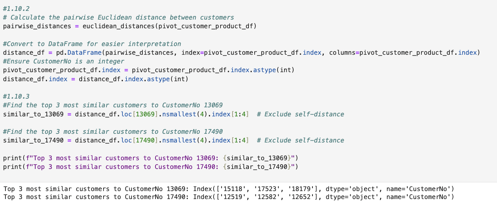The solution is implemented using the euclidean_distances class from sklearn. The solution is optimal for this dataset. Alternatives for this question would be choosing other methodologies to calculate the distance such as Manhattan distance etc.
To recommend products that the customer has never purchased before, we have come up with 2 approaches based on the previous tasks.
APPROACH 1:
Using Apriori analysis done in the basket analysis, we can analyze the purchase patterns of a customer and suggest that customer, products he/she has never bought.
APPROACH 2:
We can analyze the purchase patterns of customers similar to another customer, rank the products they have bought based on the quantity and then recommend the new products.